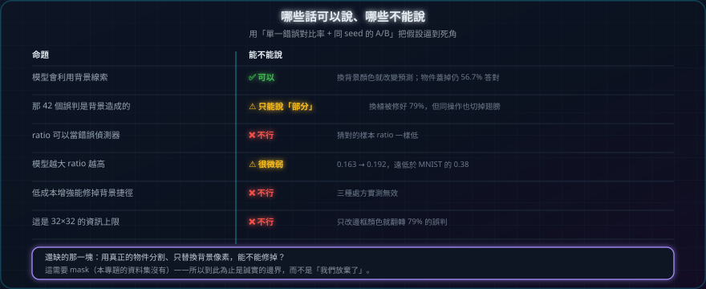

總結：五條方法論教訓
一句話：用「單一錯誤對比率 + 同 seed 的 A/B」把假設逼到死角，比看一百張熱點圖有用。

這個實驗在做什麼
這章沒有新實驗，而是把前面 11 章的結果整理成可執行的檢查流程：以後遇到「模型是不是在作弊」這種問題，照這四步走就不會憑感覺下結論。
- 步驟 1先用混淆矩陣定出要處理的「錯誤對」（例：bird→plane 4.2%），不要用總準確率當目標
- 步驟 2用 Grad-CAM 提出假設、用遮擋 ratio 量化「有沒有決定性證據」，兩者都只算證據、不算結論
- 步驟 3用反事實（改背景／遮物件）確認因果方向；改動若碰到物件，結論要打折
- 步驟 4才做干預，並用同一個指標驗證；同時記錄準確率的代價
哪些話可以說、哪些不能說
| 命題 | 能不能說 |
|---|---|
| 模型會利用背景線索 | ✅ 可以（換背景顏色就改變預測；物件蓋掉仍 56.7% 答對） |
| 那 42 個誤判是背景造成的 | ⚠️ 只能說「部分」（換植被修好 79%，但同操作也切掉翅膀） |
ratio 可以當錯誤偵測器 | ❌ 不行（猜對的樣本 ratio 一樣低） |
| 模型越大 ratio 越高 | ⚠️ 很微弱（0.163 → 0.192，遠低於 MNIST 的 0.38） |
| 低成本增強能修掉背景捷徑 | ❌ 不行（三種處方實測無效） |
| 這是 32×32 的資訊上限 | ❌ 不行（只改邊框顏色就翻轉 79% 的誤判） |
還缺的那一塊
唯一還沒回答的問題是：用真正的物件分割、只替換背景像素，能不能修掉？
這需要 mask（本專題的資料集沒有），所以到此為止是誠實的邊界——而不是「我們放棄了」。
如果你要往下做，下一步很明確：找一個有分割標註的資料集（例如 COCO 子集），只把「非物件」像素隨機換成其他圖片的背景，再量同一個指標。
帶走一句話
這次的收穫不是修好了模型，而是知道：背景捷徑是真的、但沒有分割就修不掉，而且三個看起來很合理的處方全都無效。
STEP 05程式碼
安裝 + 七支腳本
七支腳本的分工（點檔名可看原始碼）：
- cnn_check.py — 尺寸追蹤、參數量、padding 缺失與 GAP 對照（第 2 章）
- train_cnn.py — 訓練：MNIST / CIFAR-10、small / wide、erase / bg-mix（第 3、9、11 章）
- inspect_model.py — 特徵圖、Grad-CAM、遮擋、錯誤分析、kernel 視覺化（第 3–7 章）
- occlusion_experiment.py — 遮擋 ratio 的統計實驗（第 6 章）
- error_taxonomy.py — decisive / mixed / blind 分型（第 8 章）
- confusion_probe.py — 混淆矩陣與單一捷徑比率（第 9、11 章）
- background_swap.py — 反事實測試（第 10 章）
最短重現路徑（Windows PowerShell，CUDA 版 PyTorch）：
pip install torch torchvision matplotlib datasets pillow tqdm
# 第 2 章：先確認環境與模型定義沒問題
python cnn_check.py
# 第 3–7 章（MNIST）
python train_cnn.py --dataset mnist --epochs 3 --dump-maps --plot
python inspect_model.py --dataset mnist --n 4 --kernels --errors 3 --occlusion
# 第 9–11 章（CIFAR-10，第一次會自動從 HuggingFace 取資料）
python train_cnn.py --dataset cifar10 --arch wide --epochs 15 --batch-size 512 --lr 4e-3 --out run_wide
python confusion_probe.py --ckpt run_wide\cifar10\best.pt --class bird --tag wide
python error_taxonomy.py --classes bird,dog,ship --k 40 --ckpt run_wide\cifar10\best.pt
python background_swap.py --ckpt run_wide\cifar10\best.pt --class bird --n 300 --tag bird